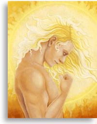

|
Sākumlapa Elektroniskā grāmata
GV 1 (03.2005. - 06.2005.) SAITES:
|
|
Šajā vietnē ir Dievišķo Gudrības Valdoņu vēstījumu tulkojumi. Vēstījumi cilvēcei doti ar Lielās Baltās Brālības Sūtnes Tatjanas Mikušinas starpniecību un
|
|
DIEVIŠĶIE VALDOŅI |
|
|
|
|
|
Karmas Valdoņi ir mūsu Dievišķie aizstāvji, un viņi kalpo par starpniekiem starp cilvēkiem un viņu karmu. Par Lielo Karmas Valdi 
Karmas Valde ir institūcija, kurā ietilpst astoņi Gudrības Valdoņi, un viņiem ir uzlikta atbildība: spriest tiesu šai pasauļu sistēmā, noteikt karmu, dāvāt žēlastības un noteikt atmaksu katrai dzīvesplūsmai. |

|
Es un mani eņģeļi vienmēr esam jūsu rīcībā un sevišķi grūtos jūsu dzīves brīžos, kad jūs zaudējat kontroli pār sevi un kļūstat viegli ievainojami tumsas spēkiem, jūs vienmēr varat lūgt mums palīdzību. Veseli manu aizsardzības eņģeļu leģioni ir gatavi sniegt jums palīdzību un aizsardzību 24 stundas diennaktī. Nekautrējieties vērsties pie mums pēc palīdzības, mūsu pienākums ir palīdzēt cilvēkiem. Mēs nevaram izpildīt savus pienākumus, kamēr jūs neaicināt mūs, taču jūsu sauciens liek mums atbildēt un nākt jums palīgā grūtā situācijā.
Par aizsardzību pret smalkā plāna zemākajiem slāņiem |
|
Helioss

|
ES ESMU Helioss. Es sūtu jums savu sveicienu no mūsu Saules sistēmas Saules! Es atnācu, lai dotu nelielu Mācību par Saules dabu. Jūs redzat sauli katru dienu, un jums šķiet tik dabiski vērot saules lēktu un rietu, ka jūs tam nepievēršat uzmanību.
Atveriet savas sirdis bezgalīgajai Debesu žēlastībai |
|
...Jums priekšā stāv atgriešanās pie Dieva. Tas nozīmē, ka tuvākajā laikā jums būs jārealizē apvērsums savā apziņā.
Jums priekšā stāv atgriešanās pie Dieva |
|
... es aicinu jūs, sākot ar šo dienu, katru savu dienu veltīt Dievam. Pietiek vienkārši pastāvīgi domāt par Dievu un visus savus dienas darbus un lietas veltīt Dievam. Jūs varat pirms katra darba sākuma, ko esat nodomājuši darīt dienas gaitā, izteikt atsevišķu lūgsnu un lūgt Dievu ņemt kontrolē visas jūsu darbības, lai tās atbilstu Dieva plāniem. Jūs varat lūgt, lai jūsu dzīvesplūsmu Dievs izmanto Viņa plānu izpildei.
Es aicinu katru jūsu dienu veltīt Dievam |
|
Jūs kļūstat par to, ko jūs domājat, kas jūs esat. Tas ir izplatījuma likums, kurā jūs dzīvojat. Iesākumam jums vajag mainīt priekšstatu par sevi. Jums vajag pārliecināt sevi, ka ar jums viss ir kārtībā. Un pats galvenais – jums vajag pārliecināt sevi, ka ar jums ir Dievs. Kas gan var notikt ar jums jūsu dzīvē, ja pats Dievs ir ar jums un rūpējas par jums? Būt Dievā, Dievišķā izjūta – tas vienkārši ir jūsu apziņas stāvoklis. Ja jūs vēlaties pastāvīgi būt Dievā, tad jūs vispirms ielaidiet Viņu savā sirdī, un pēc tam pēc kāda laika Viņš pārņems visu jūsu būtni. Tāpat kā saule apspīd visu zemi un visu visapkārt, Dievs caur jums tāpat apgaismos pasauli."
Būt Dievā – tas vienkārši ir jūsu apziņas stāvoklis |
|
Ja jūs tieši ar tādu pašu dedzību, ar kādu dažreiz mēģināt īstenot savas vēlmes fiziskajā pasaulē, tiektos uz Dievišķām iespējām, kas gaida cilvēci Zelta Laikmetā, un, ja to vēlētos kaut vai daži procenti no iemiesotās Zemes cilvēces, tad Zelta Laikmets pamazām sāktu nogulsnēties jūsu fiziskajā pasaulē. <...> Dievišķie paraugi ir gatavi nogulsnēšanai. Tie tikai gaida, kad jūsu apziņa nedaudz atbrīvosies no pastāvīgas koncentrēšanās uz apkārtējo ilūziju, lai Dievišķie paraugi varētu caur jūsu apziņu iespraukties jūsu fiziskajā pasaulē. <...> Ar Dievu viss ir iespējams! <...> Nezaudējiet Ticību un Cerību un glabājiet Mīlestību savās sirdīs. Es esmu pārliecināta, ka jums viss izdosies!
Ar Dievu viss ir iespējams! |
|
Jūs varat sākt kalpošanu tieši tur, kur jūs atrodaties pašreizējā brīdī. Visu, ko jūs šajā brīdī darāt, jūs varat novirzīt kalpošanai Brālībai! Paskatieties, ko jūs darāt!
Jūs varat sākt kalpošanu tieši tur, kur jūs atrodaties pašreizējā brīdī |

|
Tik daudz šajā pasaulē ir daiļā un apburošā. Tik daudz ir tā, ko Dievs devis cilvēcei pilnīgi par velti kā Dievišķo dāvanu. Tie ir saules lēkti un rieti, tas ir saules siltums, tās ir putnu dziesmas, tā ir puķu ziedēšana, tā ir vēja dziesma un strautu čalošana. Tik daudz Dievs ir devis cilvēcei kā dāvanu!
Es mācu pārvarēt vardarbību apziņā |
|
Es atnācu šodien, lai modinātu jūsu dvēselēs tiekšanos uz Dievišķo Brīvību kā atbrīvošanos no matērijas važām. Jums ir pienācis laiks sākt apzināties tās vienkāršās lietas, ko jums māca Dievišķie Valdoņi. Jūsu apziņai vispirms jātop atbrīvotai. Jums ir jāiemācās savā apziņā izjust Dievišķās Brīvības jūtas kā nepiesaistīšanos materiālajai pasaulei.
Mācība par Dievišķo Brīvību |
Jūs ilgi meklēsiet savu Dievu. Bet jūs atradīsiet Viņu kādā jaukā dienā, kad jums šķitīs, ka jūsu dzīve ir zaudējusi jebkādu jēgu, kad nekas jūsu pasaulē vairs nesaistīs jūs pie sevis. Jūs sēdēsiet pie savas dzīves sasistās siles, ģimenes vai darba krāsmatās, vai vēl kā cita krāsmatās, kas jums bija nozīmīgs un ir pagājis. Un tajā brīdī, kad nekas nebūs palicis jūsu pasaulē, kam jūs būsit pieķērušies, tajā brīdī jūs ar pēdējo cerību vērsīsiet savu skatu uz debesīm un teiksiet savā sirdī: „Kungs, palīdzi man, Kungs. Es zinu, ka Tu esi. Es zinu, ka Tu dzirdi mani. Es ticu Tavai varenībai un Tavai žēlsirdībai. Es mīlu Tevi, Kungs, un es ticu, ka viss, ko Tu esi darījis ar mani, bija vajadzīgs tikai tādēļ, lai es atnāktu pie Tevis. Piedod man, Kungs, visu, ko es darīju sava nesaprātīguma dēļ. Es pateicos Tev, Kungs, par Tavu mācību un par to, ka Tu ļāvi man iziet cauri visiem pārbaudījumiem un izturēt tos ar godu. Palīdzi man, Kungs, atrast Tevi un nekad vairs dzīvē nešķirties no Tevis.” Tajā brīdī jums šķitīs, ka Debesis ir atvērušās. Jūs sajutīsiet to, ko nekad neesat izjutuši savā dzīvē. Jūs sapratīsiet, ka viss, pēc kā jūs esat tiekušies, jums jau ir un vienmēr ir bijis. Tas viss ir jūsos, jūsu sirdī, bet jūs negribējāt to redzēt un dzirdēt līdz tam savas dzīves brīdim, kad jūsu ausis sāka dzirdēt un acis atvērās.
Saruna par Dievu |

|
...es vēršos pie tiem, kas ir gatavi, pie maniem bērniem, ar kuriem es strādāju daudzus iemiesojumus. Jums ir pienācis atbildīgs Ceļa posms. No jums tiks prasīts maksimāls spēku sasprindzinājums un visas jūsu spējas, ko jūs esat izstrādājuši iepriekšējos iemiesojumos. Es nāku pie jums atkal, mani mīļotie, putnēni no manas ērgļa ligzdas. Es baroju jūs ar gadsimtu gudrību, es padzirdīju jūs ar Dievišķo gaismas enerģiju. Man ir tiesības griezties pie jums pēc palīdzības, un man ir tiesības grūtā brīdī cerēt uz jums. Es ceru, ka jūs atsauksieties uz manu aicinājumu. Un pat tie no jums, kas ir pieļāvuši lielas un mazas kļūdas, netielējieties. Griezieties atpakaļ zem mana tēvišķā spārna. Nav tādu pārkāpumu, ko nevarētu izlabot ar nesavtīgu Kalpošanu un uzticību Skolotājiem.
Jums ir jāvelta Kalpošanai visa sava dzīve |
|
Mēs aicinām jūs ne tikai uz lūgšanu, mēs aicinām jūs uz to, lai jūs būtu gatavi darīt reālas lietas fiziskajā plānā. Tas nenozīmē, ka jums viss ir jāpamet un jādodas turp, kur mēs norādīsim. Jums, pirmkārt, ir jānes Dievišķā apziņa un Dievišķie paraugi tajā vietā uz zemeslodes, kur jūs dzīvojat, jūsu ģimenē, jūsu darba vietā. Jūs un tikai jūs esat spējīgi nest jaunu apziņu pasaulē. Es paredzu, ka jums nebūs viegli to darīt. No jums tiek prasīts veikt varoņdarbu, daudzus varoņdarbus, jo viss, kas ir jūsu apkārtnē, pretosies jums. Jūsu priekšā cita pēc citas radīsies grūtības un šķēršļi cits pēc cita. Ļoti sarežģīti ir darboties jums apkārtesošajā pasaulē, un ļoti grūti ir nest pasaulei jaunu apziņu un jaunu domāšanu.
Savlaicīgi norādījumi |
Dievišķā Patiesība ir vienkārša. Dievišķā Mīlestība ir pieejama visiem. Viss ir virspusē, un, lai saņemtu Dievišķo Gudrību, nevajag maksāt naudu par to. Dievs visiem visu dod par velti. Jums tikai vajag atrast šauro taciņu, kas ved jūs uz Dievišķo virsotni, starp tūkstošiem ceļu un maģistrāļu, kas noved strupceļā. Jums vajag saprast, ka īstajai Ticībai nav nekā kopēja ar rituāliem un ceremonijām. Īstā Ticība ir jūsu sirdīs. Dievs mīt jūsu sirdīs. Tiem cilvēkiem, kas ir iepazinuši īsto Dievu, kas mīt sirdī, nav nekādas atšķirības, kurā svētnīcā ieiet, lai lūgtos. Nav svarīgi: vai jūs ieejat budistu pagodā, kristiešu baznīcā, sinagogā, mošejā vai lūgšanu namā. Ja jūs ejat tur pie Dieva, jūs viņu atradīsiet visur. Bet, ja jūs ejat ar tukšu sirdi, tad jūs neatradīsiet Dievu nekur.
Patiesība, Dievs, Mīlestība ir jūsos |
|
..., ja cilvēki saprastu manu mācību, tad viņi uz visiem laikiem atturētu draudzi no ārējās pielūgšanas un ārējiem rituāliem un virzītu viņus uz tikšanos ar reālo mesiju, ar viņu pašu reālo daļu, uz iekšējo satikšanos ar Dievu viņos pašos. Ieguvuši šo iekšējo saskarsmi, ieguvuši pieeju šai svētlaimei savā iekšienē, šie ļaudis jau nekad vairs nevarētu noticēt nevienai ārējai reliģijai, ārējiem skolotājiem.
Gatavojiet savas svētnīcas mesijas atnākšanai |
"...viens cilvēks, kurš iededzies par Zelta Laikmeta īstenošanas ideju planētai Zeme, ir spējīgs iekvēlināt daudzu blakus esošo cilvēku sirdis. Mums nepieciešami gaismas nesēji, kas ir gatavi ziedot sevi, ziedot visu, kas viņiem ir, lai virzītu uz priekšu jaunās idejas, jauno dzīvesveidu, kurš neizbēgami nāks nomainīt veco dzīvesveidu.
Iesaistieties pārveidošanā, lai dzīve uz planētas Zeme ritētu pēc Dievišķajiem principiem un Dieva vadībā! Vai jūsu vidū ir drošsirdīgie un bezbailīgie?
Jūs esat nolemti Zelta Laikmetam! |
... Mācību laiks ir beidzies. No jums tiek prasītas konkrētas darbības un konkrēti soļi fiziskajā plānā. „ES ESMU TAS, KAS ES ESMU vārdā, mana varenā ES ESMU Klātbūtnes vārdā, mana Svētā Es Kristus vārdā es aicinu iemīļoto El Moriju ienākt manā svētnīcā un darboties caur mani, lai izpaustos Dieva Griba fiziskajā oktāvā un astrālā plāna blīvajos slāņos. Iemīļotais El Morija, es atdodu pilnīgā tavā rīcībā visus četrus manus zemākos ķermeņus: fizisko ķermeni, astrālo ķermeni, mentālo ķermeni un ēterisko ķermeni. Darbojies caur mani, ja tā ir Dieva Svētā Griba. Lai notiek Dieva Griba. Āmen.” Un es apsolu jums, ka tiklīdz tas būs iespējams, es ieiešu jūsu svētnīcās un darbošos caur jums.
Es ieiešu jūsu svētnīcās un darbošos caur jums |
... esiet modri. Kad pienāk jūsu kārta kārtot testus un saņemt iesvētījumus, nenogriezieties no izvēlētā Ceļa. Atcerieties tās Mīlestības jūtas, kas vadīja jūs, kas bija jūsu ceļazvaigzne, un jebkurā dzīves situācijā mēģiniet atrast to risinājumu, kas atgriezīs jums jūsu Mīlestības jūtas. Vieglu testu nav un vieglu pārbaudījumu un eksāmenu nav. Bet tāds ir šā visuma Likums. Jums ir jānokārto nepieciešamie testi, pirms jums tiks uzticēta kalpošana. Un atcerieties, ka nav testu, kurus nevarētu nokārtot. Jums tiek dots tieši tik, cik jūs esat spējīgi izturēt, pat esot uz savu spēku un iespēju robežas. Ar Mīlestību pret jums ES ESMU Maitreija.
Mācība par Mīlestību un dzīves pārbaudījumiem |
|
... tāds ir stāvoklis pasaulē pašreiz, ka vislabākās dvēseles jūtas nomāktas pasaulē un nevēlas dzīvot. Tai pašā laikā, kad tie cilvēki, kuriem nepiemīt daudz tikumu, lieliski jūtas tajā situācijā, kas ir ap viņiem. Mīļotie, jūsu dvēseles uzņēmās smago iemiesojuma nastu šajā Zemei sarežģītajā laikā. Un es varu tikai atgādināt jums to un teikt mierinājuma vārdus un noslaucīt jūsu asaras. Bet jums pienākas turpināt izpildīt jūsu misiju. Katrs no jums ir ļoti dārgs manai sirdij un šī īpašā saikne ar mani vienmēr sniegs jums palīdzību tajā brīdī, kad jums liksies, ka vairs nav spēka un iespēju izturēt rupjību un tumsonību ap jums. Jūsu dzīves visgrūtākajos brīžos atrodiet sevī spēkus, lai domās nonāktu saskarsmē ar mani. Vienkārši padomājiet par mani un es varēšu parādīt savu klātbūtni jums blakus un dalīt ar jums jūsu nastu. Un jūs izjutīsiet atvieglojumu un spēsiet iet tālāk pa dzīvi un izpildīt savu Kalpošanu līdz galam.
Viss laimīgas dzīves mehānisms ir ielikts jūsos |
|
... pats galvenais jums būs jūsu izvēle sākt savu virzību pa atbrīvošanās Ceļu no sava ego, pa atgriešanās Ceļu Dieva reālajā pasaulē. Šis pats pirmais un vissvarīgākais solis pareizajā virzienā var kļūt jums tik izšķirošs, ka izmainīs visu jūsu dzīvi dažos gados. Var iztērēt vēl miljonus gadu, klīstot pa iluzoro pasauli. Bet, kad jūs sperat vienu soli pareizajā virzienā un pēc tam turpināt iet, lai cik grūti jums nebūtu un lai kādiem pārbaudījumiem nenāktos pakļauties jūsu Ceļā, tad jūs izdarāt pareizo izvēli, un šī izvēle kļūs par jūsu uzvaras un jūsu iziešanas ķīlu no ilūziju pasaules Dievišķajā pasaulē. Šī pasaule eksistē tikai jūsu apziņā, jūs ar savu apziņu uzturat šīs pasaules eksistenci. Tāpēc jums ir jāpāriet uz jaunu jūsu apziņas un jums apkārtesošās realitātes izpratnes līmeni, lai atstātu fizisko pasauli un iegūtu Dievišķo Brīvību. Neviens, neviens cilvēks nevar piespiest jūs izdarīt jūsu izvēli. Tikai jūs paši vienatnē ar sevi savas sirds klusumā varat pieņemt šo liktenīgo lēmumu. Nekad neaizmirstiet, ka jūs nesaņemsiet nekādu apbalvojumu fiziskajā pasaulē, un jums nekad nav jādomā ne par kādu priekšrocību gūšanu sev fiziskajā pasaulē. Visi jūsu sasniegumi un visa jūsu pieredze paliks ar jums visā šī visuma eksistences ilgumā un pāries kopā ar jums Augstākajās Pasaulēs.
Vai jūs esat gatavi sākt iet pa Ceļu? |
|
Tieši tāpat kā koki rudenī met lapas, tā jūs zaudējat savus fiziskos ķermeņus, bet tikai tādēļ, lai atkal atgrieztos šajā pasaulē, atkal piedzimtu un saņemtu jaunu ķermeni. Gudrs cilvēks, dzīvojot šajā dzīvē, domā par savu nākamo dzīvi. Viņš saprot, ka katra viņa izvēle, rīcība, darbība, doma, jūtas veido viņa nākotni šajā dzīvē un nosaka nākamās dzīves apstākļus. Jūsu attīstībai būs ļoti derīgi, ja jūs katrā savas dzīves brīdī padomāsiet par to, kā tas, ko jūs darāt, atsauksies uz jūsu nākamo dzīvi. Necentieties saņemt apbalvojumus par saviem labajiem darbiem šajā dzīvē. Tiecieties saņemt apbalvojumu nākamajā dzīvē. Tas ir minimālais uzdevums, kas ir jūsu priekšā.
Tie no jums, kuru apziņa ir vairāk paplašināta, saprot, ka jūs esat neatņemama Dieva sastāvdaļa, jūs veidojat Dieva ķermeni, tieši tāpat kā visas dzīvās būtnes uz Zemes. Tāpēc apbalvojumu saņemšana jums vairs nav svarīga arī nākamajā dzīvē.
Protiet saskatīt Patiesības sakni |
|
Skumji, ka cilvēces labāko pārstāvju prāti tagad pievēršas daudzām nevajadzīgām lietām. Visapkārt ir ļoti daudz dažnedažādas darbošanās, kas savaldzina un atrauj no tās misijas, kuras dēļ daudzas gaišas dvēseles ir atnākušas iemiesojumā. Es varu nosaukt vairākus desmitus cilvēku, kas ir iemiesojumā un kam bija jāstrādā, lai cilvēcei darītu saprotamas „Slepenās Doktrīnas” šifrētās tēzes. Taču viņi visi ir aizrāvušies ar lietām, kas nedara viņiem godu. Es paredzu, kāda būs viņu reakcija, kad viņi veiks pāreju un saskatīs, cik bezmērķīgi ir nodzīvots mūžs. Aizraušanās ar iluzorām problēmām un mērķiem ir mūsdienu cilvēku galvenā nelaime. Turklāt ir vēl šādas grūtības: modernās komunikācijas ir veicinājušas to, ka cilvēku apziņa zaudējusi koncentrēšanās spēju, kas nepieciešama Patiesības izzināšanai, šīs Patiesības atrašanai starp rindām, jo īpaši tad, ja tā ir ar nodomu izkaisīta ne tikai dažādās lappusēs, bet arī dažādos sējumos.
Divas Gaismas misijas |
|
Bezjēdzīgi un veltīgi ir noteikt savus likumus tajā pasaulē, kurā mēs dzīvojam. Mums jāpakļaujas Likumam, kas ir visa šī visuma pamatā un kas ir dots jau šī visuma radīšanas momentā. Likums ir tāds, ka mums ir jāatsakās no vēlēšanās izpaust sevi, savu ego savā dzīvē, mums ir jāizdara viss, kas no mums atkarīgs, lai dotu iespēju Dievam izpaust sevi caur mums. Tad mēs varēsim atjaunot mūsu Vienotību. Tad mēs varēsim piedalīties šī visuma Radītāja ieceres realizācijā. Šis ir tas uzdevums un tas darbs, kas katram ir jāizpilda. Un nav neviena cilvēka visā visumā, kas izpildītu šo darbu jūsu vietā. Tāpēc šis darbs ir vissvarīgākais. Šī darba paveikšana ir jūsu dzīves jēga, ko jūs meklējat ārpus sevis un nevarat atrast.
Mums jādod iespēja Dievam izteikt sevi caur mums |
|
Pirms Dievs dos jaunu iespēju šai zemei, zemei jāiziet cauri katarsei, attīrīšanai. Pēc attīrīšanās jāseko nožēlošanai, un tikai tad tiks atklāts gaišais ceļš Krievijas tautām. <...>
Visa tumsa no Krievijas jums ir jāizdzen ar savas sirds spēku, ar sava parauga spēku.
Visa tumsa no Krievijas jums ir jāizdzen ar savas sirds spēku, ar sava parauga spēku |
|
Es iededzu uguni jūsu sirdīs. Ja jums ir šī uguns, jūs nevarat vairs dzīvot bezdarbībā.
Pienācis laiks, kad jums jāsāk darboties! |
|
Es, Valdonis Ilarions, atceros tos brīžus, kad es biju iemiesojumā un man bija iespēja vienatnē kādā nostūrī veselām dienām vērot sevi it kā no malas. Es sapratu, ka es esmu dzīvs, iemiesojies cilvēks ar visām sava ķermeņa funkcijām, bet tajā pašā laikā es sāku apzināties, ka manī ir cits cilvēks, kas nav tieši saistīts ar mana cilvēciskā ķermeņa funkcijām. Tā bija dīvaina personības sašķelšanās. Es biju uz Zemes iemiesojumā, un vienlaikus es apzinājos, ka esmu nemirstīgs. Es esmu mūžīgs. Es esmu atstāts pats savā ziņā šajā iemiesojumā un mēģinu saprast šīs manas dzīves jēgu, un vienlaikus es esmu daudz lielāks nekā mans fiziskais ķermenis. Pēc būtības mans fiziskais ķermenis ir tikai skafandrs, kas ļauj manai Augstākajai daļai būt manī.
Saruna par dvēseles un ķermeņa dziedināšanu |
|
Jūs ieejat tajā līmenī, kas ļaus jums īstenot jūsu saiti ar savu Augstāko daļu bez agrākās piepūles. Visos laikos ir bijuši cilvēki, kas turējušies savrup un glabājuši sevī saskarsmes noslēpumu starp pasaulēm pat tad, kad aizkars bija maksimāli blīvs. Un tieši es atnācu pie jums tagad, lai paziņotu jums par jūsu iespēju. Aizkars starp mūsu pasaulēm ir gatavs pārplīst kaut vai tūlīt. Jūsu apziņa ir vienīgais šķērslis, kas jums traucē ieraudzīt mūsu pasauli un nākt saskarē ar mūsu pasauli.
Uzvaras stunda ir pienākusi! |